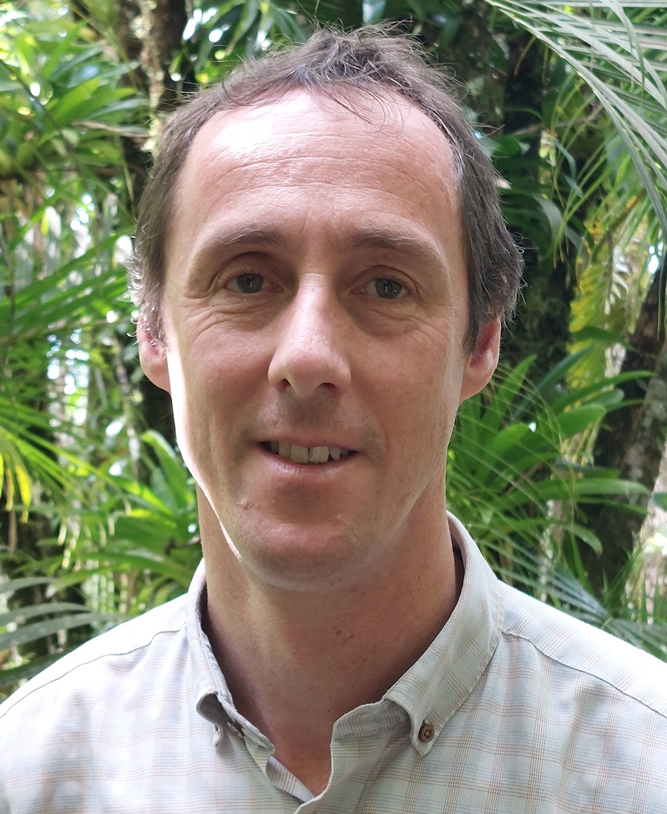

Frédéric Meunier
École nationale des ponts et chaussées, CERMICS
6 et 8, av. Blaise Pascal
Cité Descartes - Champs-sur-Marne
77455 Marne-la-Vallée cedex 2
France
Tél: (+33) 1 64 15 33 72
E-mail: frederic.meunier@enpc.fr
Current position
Researcher at CERMICS in the Optimization team and professor at École nationale des ponts et chaussées
Associate professor at École polytechnique
Research
Combinatorics and operations research
Sections
Last update: January 2026